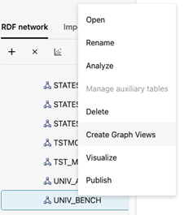
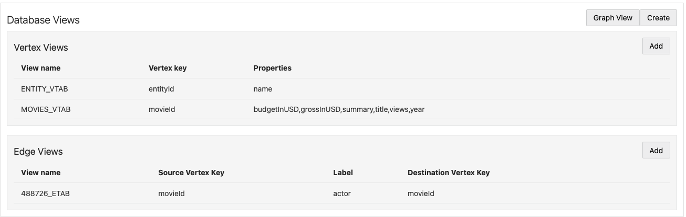
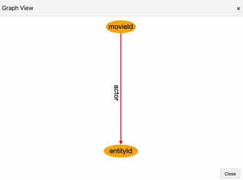
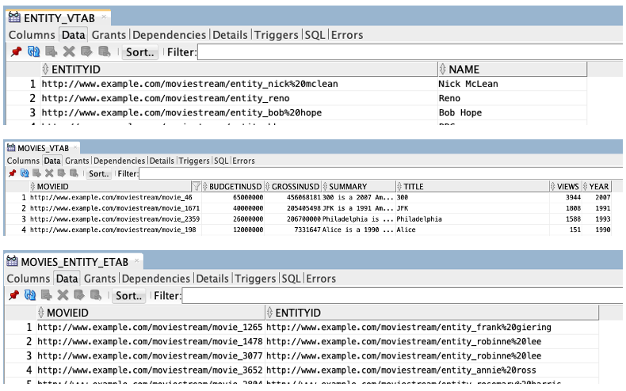

14.3.2.12.1 Creating a Graph View
- Right-click the RDF model to open the context menu as shown:
Figure 14-61 Create Graph View Option

Description of "Figure 14-61 Create Graph View Option" - Click Create Graph Views.
The application opens an editor with the available RDF classes populated from a SPARQL query as shown:
Note that the database graph views cannot be created if there are no RDF classes.
- Add Vertex Views as required.See Creating a Vertex View for more information.
- Add Edge Views as required.See Creating an Edge View for more information.
- Review and verify the graph representation of the Database
Views.The following figure shows a sample graph representation:
Figure 14-63 Sample Graph Definition

Description of "Figure 14-63 Sample Graph Definition" - Optionally, you can hover over a table row and click the action menu icon to
Remove, Edit, or
Preview a specific vertex or an edge view.
- Click Graph View to visualize the sample graph.
Note that in a graph view, each node represents a vertex view and the link between nodes have an edge label. The following figure shows a sample graph visualization containing two vertex views with key attributes
movieIdandentityIdwhich are linked by theactoredge label.Figure 14-65 Graph Visualization for RDF Database Views

Description of "Figure 14-65 Graph Visualization for RDF Database Views" - Click Create to create the RDF graph view in the
database.
The Create Views dialog opens as shown:
- Optionally, switch ON the Overwrite option to replace any existing view definition.
- Click Create.
The database graph view gets created.The following figure shows the views that are created in the database for the sample graph definition shown in step-5:
Figure 14-67 RDF Database Graph Views

Description of "Figure 14-67 RDF Database Graph Views"
Parent topic: Database Views from RDF Models